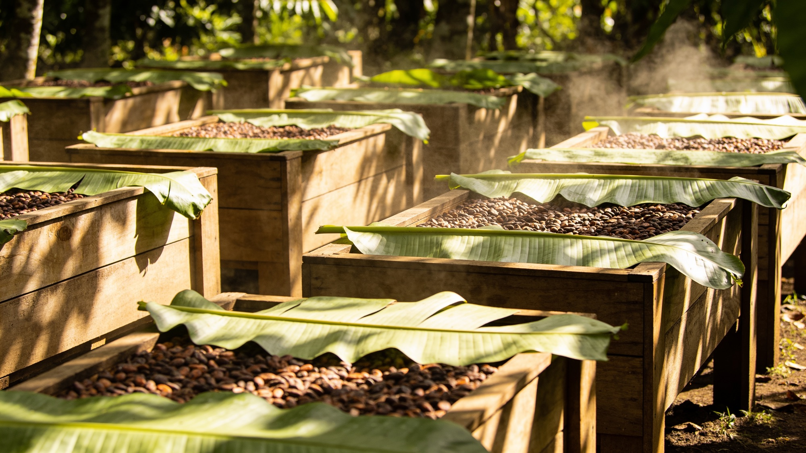

Las fincas
Seis familias, a menos de dos grados de la línea.
«Si fermentas un día de más, la fruta se vuelve vinagre. Un día de menos, y no aparece.»
Rosa Cedeño · Finca El Paraíso, Vinces
No compramos cacao por kilo: compramos criterio. Pagamos a cada familia más del doble del precio de bolsa y apartamos su cosecha antes de que el árbol florezca. El tueste, el conchado y el temple solo pueden conservar lo que ellos ya consiguieron en la finca.

Explorador de fincas
Mismo país, cuatro sabores.
La lluvia, el suelo y la distancia al mar dejan una firma que se reconoce en la barra. Elija una región.
Manabí
Colinas secas y brisa del Pacífico. En Finca San Jacinto, la familia Mendoza fermenta solo cinco días para no perder lo floral: de ahí sale Rosa & Cacao.
Ver Rosa & Cacao 70% →